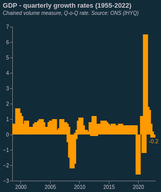

Portfolio
-
Building a site
Build your multi-page site. Host it on GitHub, with at least two pages: index (your portfolio) and project. Feel free to add more pages (about etc) and make your index and into page. If you do this make a clear portfolio page – this is what we will mark.
This website is hosted via github pages: https://github.com/albertdiones/test-github-pages
-
Embedding
Embed three charts, two that are given to you in class. One (as homework) taken from the repository of charts that drive www.rapidcharts.io
 -
Hosting data
Embed two charts of your own design: (a) from a given API, (b) from the same/related data saved to your GitHub.
This website is hosted via github pages: https://github.com/albertdiones/test-github-pages
-
Editing data, writing JSON by hand
Two more charts. One where you change the data (add an observation, add a series, create a new series); One where the data is “in-line” JSON that you write. This second chart need only have 5 or so observations.
This website is hosted via github pages: https://github.com/albertdiones/test-github-pages
-
API driven charts
Embed two charts of your own design from two separate APIs that you sign up for & gain access to.
This website is hosted via github pages: https://github.com/albertdiones/test-github-pages
-
Loops and APIs
Download code from an API using fetch in Python/Colab and chart this. Use a loop to batch download data.
This website is hosted via github pages: https://github.com/albertdiones/test-github-pages
-
Loops and scrapers
Build a scraper in Colab, save and chart the results.
-
Merging data
Build a chart with data from two separate sources. Plot these data using correlation, regression or some other technique.
This website is hosted via github pages: https://github.com/albertdiones/test-github-pages
-
Advanced analytics
Build and embed a chart that uses advanced statistical methods, testing causality or distribution
This website is hosted via github pages: https://github.com/albertdiones/test-github-pages
-
Interactivity.
Build and embed two interactive charts.